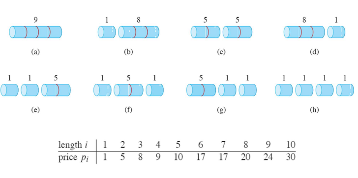
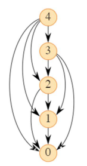
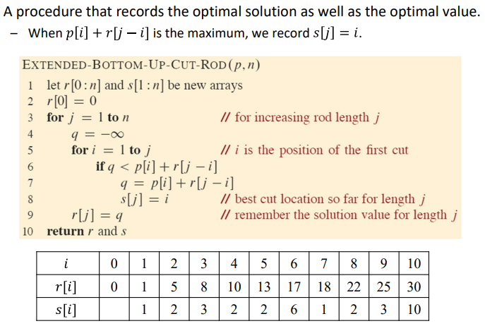
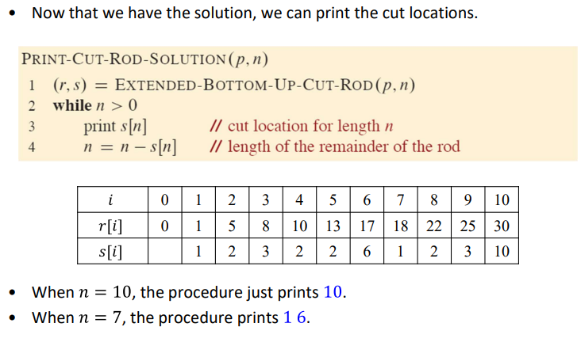
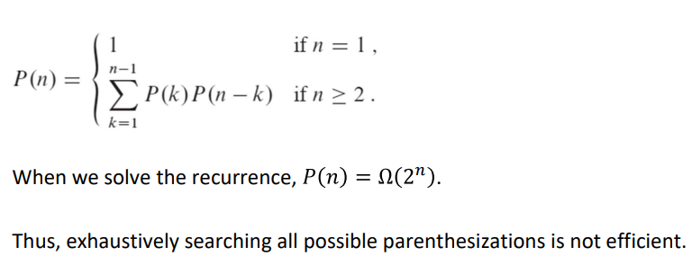
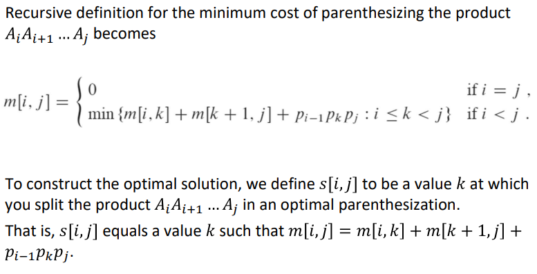

긴 철재 막대를 짧은 막대로 잘라서 판매, find 최댓값 (cut is free, 정수 길이로 자름, 각 길이마다 가격 할당)

길이n인 막데가 주어짐, 각 길이 가격 pi for i = 1, 2, ..., n / 모든 경우의 수 2^(n - 1)
optimal revenues from shorter rods : rn = max{pn, r1 + rn - 1, r2 + rn-2, ..., rn-1 + r1}
이 경우 두개의 하위 문제로 나누어진 문제의 각각에 대한 최적해를 포함 (하위 문제의 수익 최대화)
Optimal substructure
문제의 최적해는 관련된 하위 문제의 최적해를 포함하며, 이들을 독립적으로 해결할 수 있다.
- 왼쪽 길이: i / 오른쪽 길이 n - i
- 오직 오른쪽만 자름
rn = max{pi + rn - i : 1 <= i <= n}
The Rod-Cutting Problem: Divide-and-Conquer?
T(0) = 1, T(n) = 1 + Σj=0->n-1 T(j)
T(n) = 2^n = Θ(2^n)
- 길이 n인 막대에 잘라낼 수 있는 n-1개의 위치
- 각각의 가능한 방법은 n - 1곳의 위치 중 일부를 자르는 것을 의미(아무것도 자르지 않는것도 포함)
- 이것은 2^(n - 1)개의 subsets를 가짐 / 리프노드의 개수 = Thus, 2^(n - 1) / 2^(n - 1)번의 재귀호출
The Rod-Cutting Problem: Dynamic Programming
동일한 문제를 각 하위문제가 한번만 해결하도록 조치
- 하위 문제를 해결할 때, 해당 솔루션을 테이블에 저장
- 이 하위 문제의 솔루션을 참조해야 하는 경우 확인(계산x)
- 솔루션을 저장할 메모리가 필요
Top-down approach
- 재귀적으로 작성하여 각 하위 문제의 결과를 저장하도록 수정
- 하위 문제를 해결할 때, 절차는 먼저 솔루션이 이전에 저장되었는지 확인
- 솔루션이 저장된 경우, 절차는 그 값을 단순히 반환
- 솔루션이 저장되지 않은 경우, 절차는 값을 계산하고 저장
Bottom-up approach
- 하위 문제를 크기 순으로, 가장 작은 것부터 해결하며 각 하위 문제의 솔루션을 처음 해결할 때 저장
- 특정 문제를 해결할 때 그 해결에 필요한 모든 더 작은 하위 문제의 솔루션이 이미 저장되어 있음
- 위 문제를 한 번만 해결하면 되며, 처음으로 볼 때 모든 전제 하위 문제가 이미 해결되어 있음
Running time of BOTTOM-UP-CUT-ROD
- line 3-7 for loop, j 증가 1 to n
- line 5-7 에서의 내부루프 j번 실행
T(n) = Θ(n^2)
Running time of MEMOIZED-CUT-ROD
- 각각의 문제를 크기 0, 1, ... n을 한번만 해결
- line 6-7에서 n번 루프
- (1 + 2 + ... + n) = Θ(n^2)
Subproblem Graph
subproblems graph는 어떻게 각 subproblems가 다른 subproblems에 의존하는지 보여준다

- 부분 문제의 솔루션을 계산하는 데 걸리는 시간은 해당 부분 문제 그래프의 정점 (나가는 간선의 수)의 정점에 비례
- 부분 문제의 수는 부분 문제 그래프의 정점 수와 같다
- 프로그래밍의 실행 시간은 정점 및 간선 수에 선형으로 비례


Matrix-Chain Multiplication Problem: Introduction
A1,A2,...An 메트릭스를 곱할 때 연산의 수를 최소화 하는 곱셈순서를 구하는 문제
RECTANGULAR-MATRIX-MULTIPLY의 running time = p x q x r에 의헤 정해짐
여러개의 행령을 곱할 때 곱하는 순서에 따라 연산 시간이 달라짐
Problem Definition
- 주어진 행렬 연쇄 은 i = 1, 2, ..., n 일 때 행렬 Ai가 차원 pi-1 x pi를 가지며, 스칼라 곱셈 횟수를 최소화하는 방식으로 A1A2...An의 곱셈을 완전히 괄호로 묶어야 함
- The input is the sequence of dimensions <p0, p1, ... , pn>
- 제로 행렬을 곱하는 것x, 목표 = 최소 비용으로 행렬을 곱하는 순서를 결정
- 최적의 순서를 결정하는 데 투자한 시간 < 행렬 곱셈을 수행할 때 나중에 절약되는 시간
Counting the Number of Parenthesizations(괄호)
- n개의 행렬 시퀀스의 대안 괄호화 수를 P(n)으로 표시
- n이 1일 때, 하나의 행렬만 있는 것이므로 행렬 곱셈을 완전히 괄호화할 수 있는 방법은 딱 하나
- n이 2 이상인 경우, 완전히 괄호화된 행렬 곱셈은 두 개의 완전히 괄호화된 행렬 하위 곱셈의 곱
- 두 하위 곱셈 사이의 분할은 k가 1, 2, ..., n - 1 일 때 k번째와 (k + 1)번째 행렬 사이에서 일어날 수 있다.

Applying Dynamic Programming
The four steps
- 최적 해결책의 구조를 특성화
- 최적 해결책의 가치를 재귀적으로 정의
- 최적 해결책의 가치를 계산
- 계산된 정보로부터 최적 해결책을 구축
Step 1: Structure of an Optimal Parenthesizatio
- Ai:j를 계산할 때 죄적의 split은 Ak and Ak+1이라 가정
- In this solution 각 하위 연쇄의 괄호화는 최적 괄호 / Ai:k와 Ak+1:j의 대한 최적의 괄호 해를 가지고 있음
- 최적 해결책을 구축하기 위해 문제를 두 개의 하위 문제로 분할하고, 두 하위 문제 인스턴스의 최적 해결책을 찾은 다음 이 최적 하위 문제 해결책을 결합
- 최적 분할을 검토하기 위해 모든 가능한 분할을 고려
Step 2: A Recursive Solution
- Given the input dimensions <p0, p1, ..., pn>, an index pair i, j specifies a subproblem
- m[i, j]를 최소 스칼라 곱셈 횟수라고 가정
- m[i, j] = m[i,k] + m[k + 1,j] + pi-1 x pk x pj
- 우리는 최적의 k값을 모르므로 모든 k의 경우의 수를 검토해야 함

Step 3: Computing the Optimal Costs
- i, j의 각 선택마다 하위 문제 하나가 존재하므로 : the number of subproblems is Θ(n^2)
- 문제를 해결하기 위해 테이블 기반의 bottom-up approach를 사용
Step 4: Constructing an Optimal Solution
- MATRIX-CHAIN-ORDER에는 세 개의 중첩된 for 루프
- 각 루프 인덱스 (i, j, 그리고 k)는 최대 n - 1개의 값을 가질 수 있다
Running time of the procedure: Θ(n^3)
Memory space of algorithm requiring: Θ(n^2)